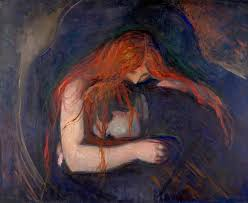
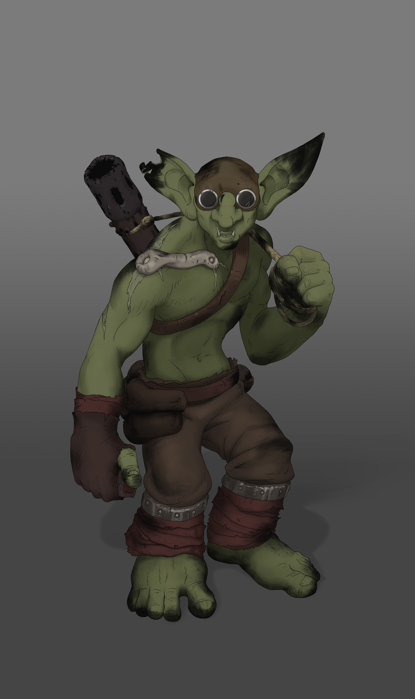
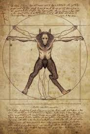

Criaturas vagantes que buscam por comida,animais e escuridao. Muito cuidado ao lidar com esses seres cujo coracao nao bate mais,sua mordida pode ser altamente letal. Acostumados a andar em bando esse especimie pode ser altamente hostil. Seus corpos mortos podem ter aparencia e ate falas humanas, alem e portar objetos e vestimentas.

Muito cuidado ao vagar pela floresta na noite eterna, pois outros mortos podem te vigiar,vampiros.Essa criaturas retem uma cede insaciável de sangue humano,conhecidos por sua forca bestial e suas capacidades sobre humanas. Podem ser confundidos com outos seres vivos ,por isso deve-se denotar sua pele assustadoramente palida e suas pressas maior que media.

Não fale com essas criaturas.Goblins são seres morbidos com tendencias a vicio e atos de pura luxuria,normalmente pequenos e larapios,goblins podem roubar e matar por vontade.Podem ser encontrados em pequenas tendas e cabanas,onde esses Miseráveis falam sobre todo tipo de atrocidade. Apesar de pequenos esses seres crueis não devem ser subestimados.

Licantropos e como são chamadas essas criaturas, elas expreitam na noite eterna em busca de carne, dos animais e de humanos que transitam pelas cidades. Licantropos tendem a escalar lugares e ter grandes habilidades de rastreamento eles tambem possuem couro e pelugem extremamente resistentes.